总览：三套演示都在这一页
18 + 7 + 11 = 36 个页面；这一页只负责“找得到”，内容还在各演示自己的页面里
演示原来分散在三个目录：assets/vr-2026/demos/、assets/vr-2026/demos-xr/、assets/vr-2026/lab/，每套各有自己的 index.html。这一页把它们并排放好，按课次顺序排；卡片上的标题、技术关键词与说明文字，逐条抄自对应目录的 index.html，没有改写、没有新增演示。
| 组（目录） | 对应课次 | 数量 | 由什么组成 | 原文索引 |
|---|---|---|---|---|
| 立体显示技术 demos/ |
第 2 次课 2026-09-09第 2 章 关键技术 |
18 | 深度线索 · 双目视差 · 分色 / 分时 / 偏振 · 视差屏障 / 柱状透镜 · 体三维 / 全息 / 光场 · HMD 模拟 · VAC / PPD / HRTF | demos/index.html |
| 硬件 + 软件 demos-xr/ |
第 3—4 次课共用 2026-09-16 / 09-23 |
7 | PPD 与设备参数 · 定位方式 · 6DoF · 手部追踪 · MR 透视 · WebXR 能力检测 · 软件生态与管线决策 | demos-xr/index.html |
| 交互零件 lab/ |
第 7 次课 2026-10-21交互零件库 |
11 9 零件 + 2 示范 |
射线 / 悬停 · 抓取 · 投掷 · 重力 · 远距拉取 · Diegetic UI · 舒适度 · Fitts 定律 · 触觉；另加投篮擂台与作业样板 | lab/index.html |
手机屏幕上这一行的表格可以左右滑动，查看“由什么组成”与“原文索引”两列。
怎么用这一页
- 点卡片 = 打开演示：整张卡片就是链接，直接指向那个演示的
.html文件（新标签页打开），不经过目录页。 - 离线可跑：三套演示都不依赖网络；本页本身也没有 CDN、网络字体与外部 JS。
- 进头显的前提：第 7 次课的 11 个是 WebXR 页面，头显浏览器打开必须 https 或 127.0.0.1（
file://不是安全上下文）。 - 别把示意图当实机：除分色立体（需红青眼镜）与 WebXR 能力检测（需真实 XR 设备）外，其余是原理示意与计算工具；真实效果以 PICO 4 Ultra 实机为准。
- 手机上也能读：卡片网格按屏幕宽度自动换行，窄屏单列；演示页面各自的适配与操作说明写在其页面内的 HUD 里。
第 2 次课 · 立体显示技术（18 个）
第2次课「虚拟现实的关键技术」配套 · 18 个页面全部离线可用、无外部依赖
原索引原话：所有演示离线可用，无外部依赖；除「03 分色立体」需红青眼镜才能真实体验立体外，其余均为原理示意/模拟。
第 3—4 次课 · 硬件与软件（7 个）
第 3、4 次课共用 · 01—06 硬件设备（第 3 章），07 软件主题（第 4 章）
原索引原话：全部离线可用，无外部依赖。01—06 为硬件设备主题（第 3 章，第 3 次课主用）；07 为软件主题（第 4 章，第 4 次课主线）。除 06 需真实 XR 设备才能返回"支持"外，其余均为原理示意与计算工具——真实效果请以 PICO 4 Ultra 实机为准。
演示边界：这些页面是原理示意，不是真实设备效果。真机体验请完成《应用操作手册》A 类九项任务。
第 7 次课 · 交互零件（11 个）
9 个零件演示 + 2 个示范案例 · 全部是单文件 WebXR，PC 与头显都能开
原索引原话：9 个零件演示 + 2 个示范案例，全部是单文件 WebXR：PC 上点开就能用鼠标键盘玩；头显浏览器打开就能进 VR（必须 https 或 127.0.0.1，file:// 不是安全上下文）。每个演示的左上角 HUD 都写着 PC 操作 / 头显操作 / 课堂要点；控制台输入 LAB.api.selfTest() 可跑内置自测。点开哪个，就按顺序从 01 开始。
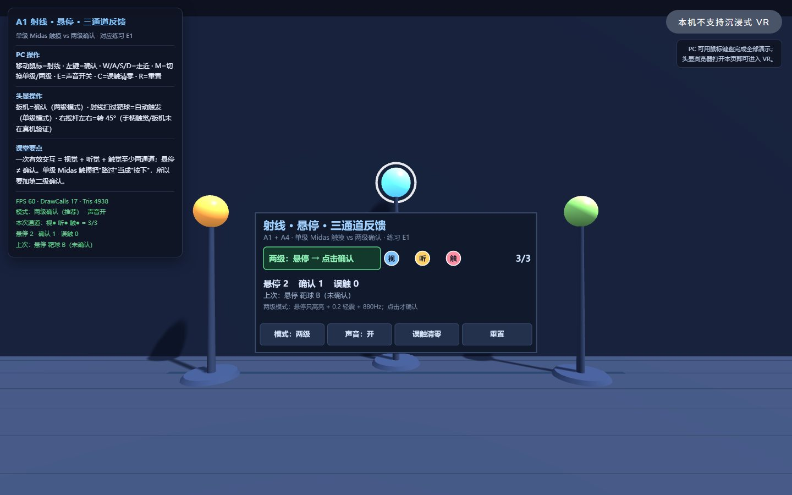
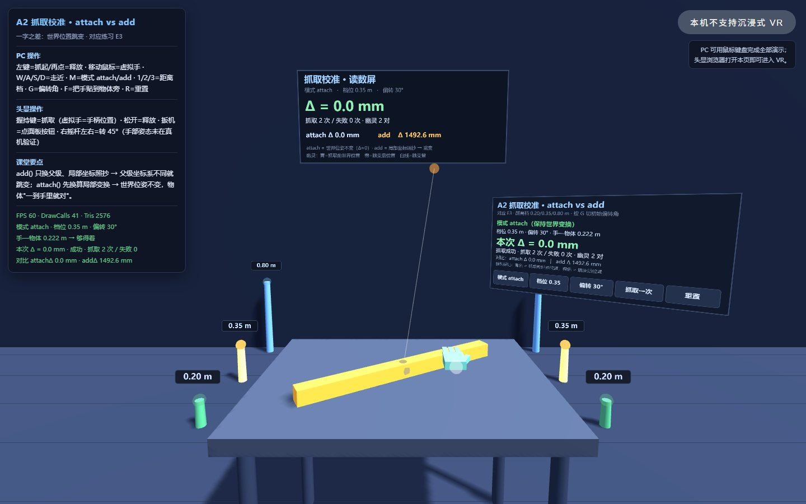
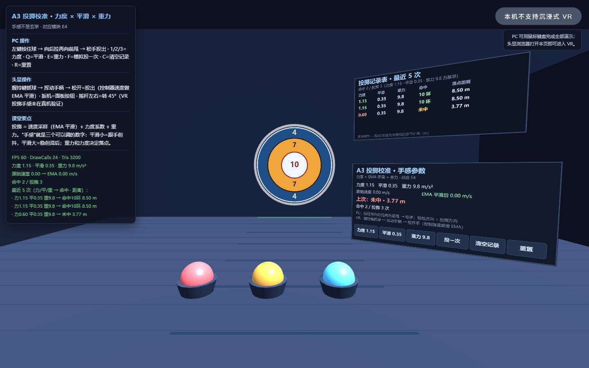
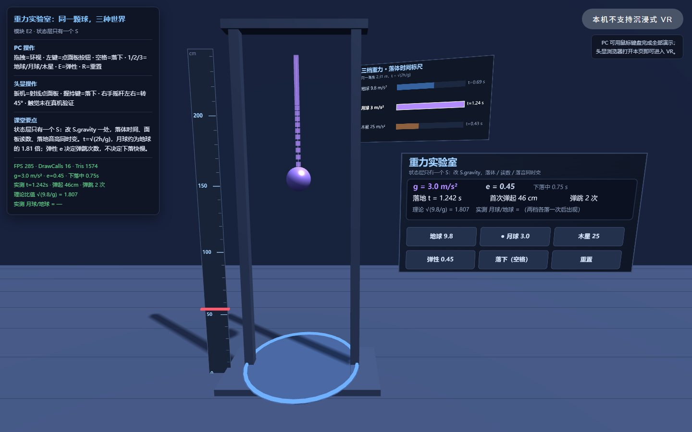
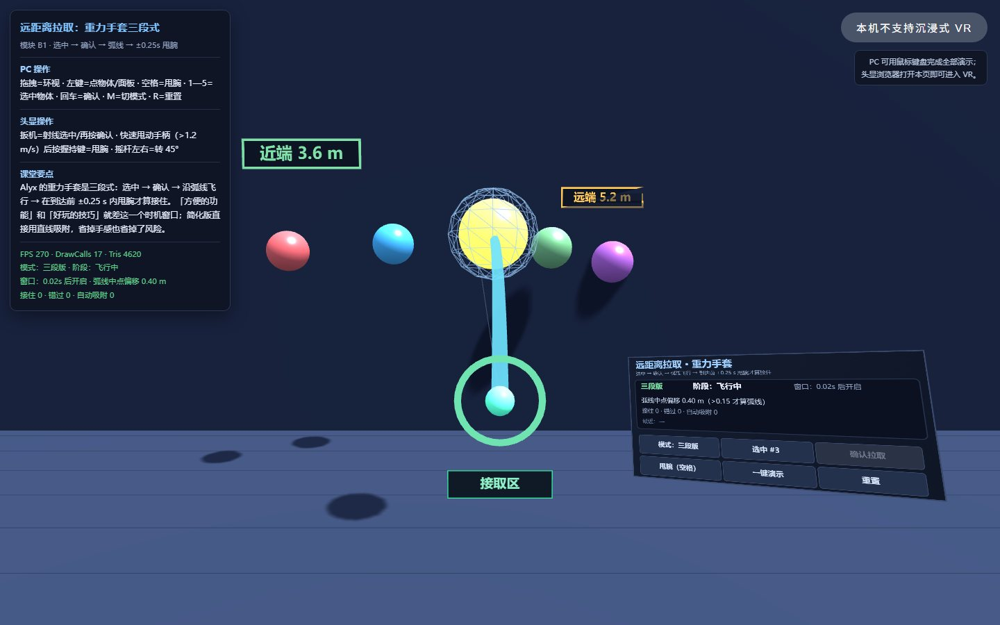
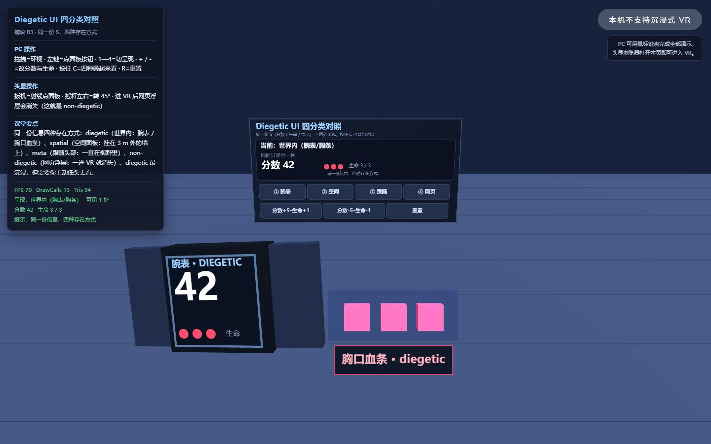
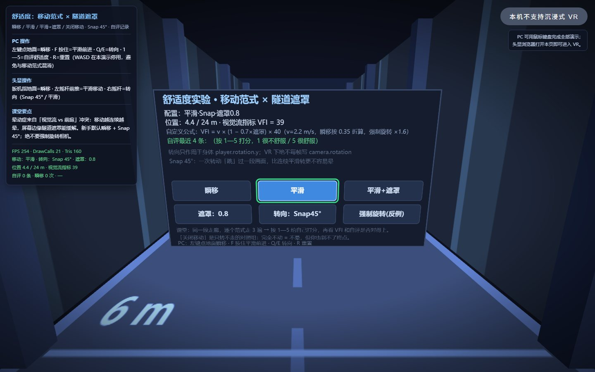
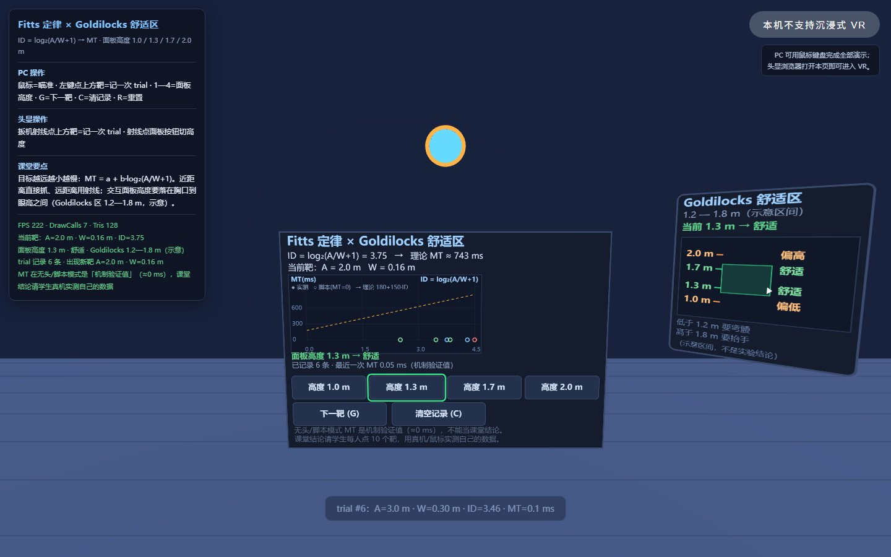
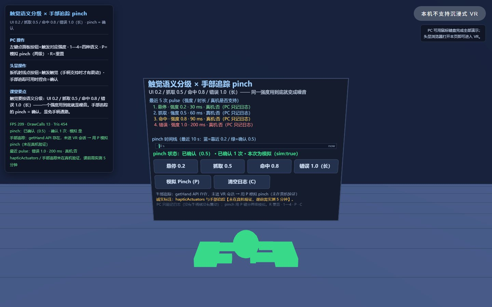
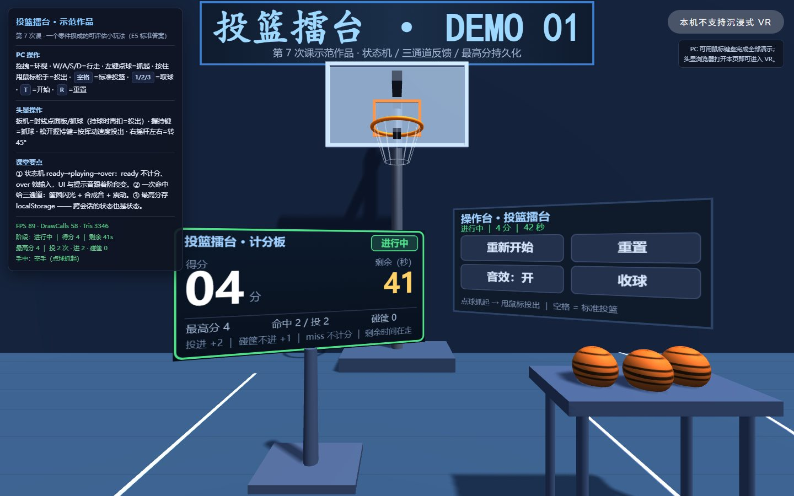
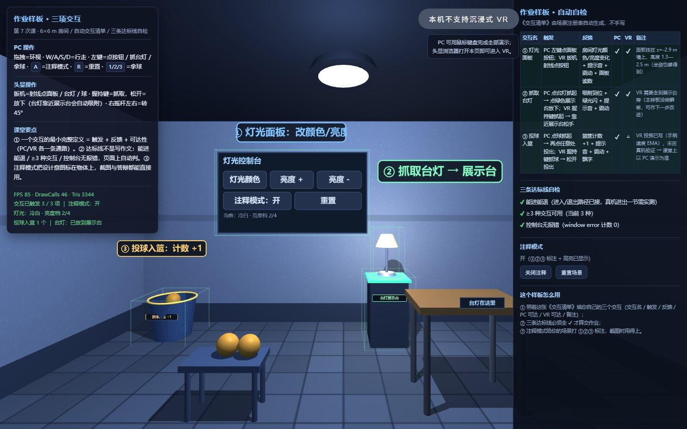
A 看 ①②③ 注释。改代码前先备份：每个演示都是单文件，复制一份再改；改坏了重新下载原文件即可。所有演示共用同目录的
three.min.js，不要删。